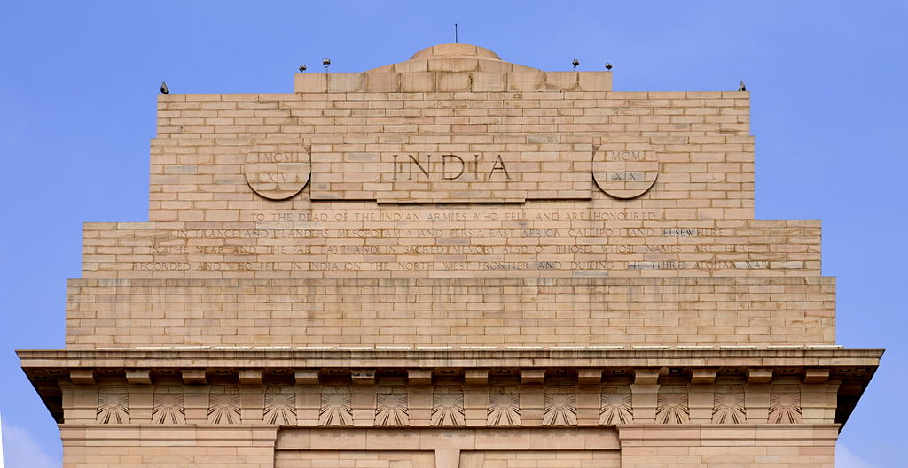

The India Gate (formerly known as the All India War Memorial) is a war memorial located astride the Rajpath, on the eastern edge of the "ceremonial axis" of New Delhi, formerly called Kingsway. It stands as a memorial to 84,000 soldiers of the British Indian Army who died in between 1914 and 1921 in the First World War, in France, Flanders, Mesopotamia, Persia, East Africa, Gallipoli and elsewhere in the Near and the Far East, and the Third Anglo-Afghan War. 13,300 servicemen's names, including some soldiers and officers from the United Kingdom, are inscribed on the gate.[2] Designed by Sir Edwin Lutyens, the gate evokes the architectural style of the memorial arch such as the Arch of Constantine, in Rome, and is often compared to the Arc de Triomphe in Paris, and the Gateway of India in Mumbai. Following the Bangladesh Liberation war in 1972, a structure consisting of a black marble plinth with a reversed rifle, capped by a war helmet and bounded by four eternal flames, was built beneath the archway. This structure, called Amar Jawan Jyoti (Flame of the Immortal Soldier), has since 1971 served as India's tomb of the unknown soldier. India Gate is counted amongst the largest war memorials in India and every Republic Day, the Prime Minister visits the gate to pay their tributes to the Amar Jawan Jyoti, following which the Republic Day parade starts. India Gate is often a location for civil society protests.

The India Gate was part of the work of the Imperial War Graves Commission (IWGC), which came into existence in December 1918 under the British rule for building war graves and memorials to soldiers who were killed in the First World War. The foundation stone of the gate then called the All India War Memorial, was laid on 10 February 1921, at 16:30, by the visiting Duke of Connaught in a ceremony attended by Officers and Men of the British Indian Army, Imperial Service Troops, the Commander in Chief, and Chelmsford, the viceroy. On the occasion, the viceroy is reported to have said, "The stirring tales of individual heroism, will live forever in the annals of this country", and that the memorial which was a tribute to the memory of heroes, "known and unknown", would inspire future generations to endure hardships with similar fortitude and "no less valor".[4] The Duke also read out a message by the King, which said, "On this spot, in the central vista of the Capital of India, there will stand a Memorial Archway, designed to keep", in the thoughts of future generations, "the glorious sacrifice of the officers and men of the British Indian Army who fought and fell". During the ceremony, the Deccan Horse, 3rd Sappers and Miners, 6th Jat Light Infantry, 34th Sikh Pioneers, 39th Garhwal Rifles, 59th Scinde Rifles (Frontier Force), 117th Mahrattas, and 5th Gurkha Rifles
Ten years after the foundation stone laying ceremony, on 12 February 1931, the memorial was inaugurated by Lord Irwin, who on the occasion said "those who after us shall look upon this monument may learn in pondering its purpose something of that sacrifice and service which the names upon its walls record."In the decade between the laying of foundation stone of the memorial and its inauguration, the rail-line was shifted to run along the Yamuna River, and the New Delhi Railway Station was opened in 1926.
The gate, which is illuminated every evening from 19:00 to 21:30, today serves as one of Delhi's most important tourist attractions. Cars used to travel through the gate until it was closed to traffic.[citation needed] The Republic Day Parade starts from Rashtrapati Bhavan and passes around the India Gate.[citation needed] India gate is often a location for civil society protests, including demonstrations in response to the Nirbhaya rape case in 2012 and the Unnao rape case in 2017, and as part of the 2011 anti-corruption movement.
In 2017, the India Gate was twinned with the Arch of Remembrance in Leicester, England,[further explanation needed] another Lutyens war memorial, following a very similar design but on a smaller scale. In a ceremony, India's high commissioner to the United Kingdom laid a wreath at the arch in Leicester and the British high commissioner to India laid one at the India Gate

The memorial-gate was designed by Sir Edwin Lutyens, who was not only the main architect of New Delhi, but also a member of the Imperial War Graves Commission and one of Europe's foremost designers of war graves and memorials. He designed sixty-six war memorials in Europe, including the highly regarded Cenotaph in London in 1919, the first national war memorial erected after World War I, for which he was commissioned by David Lloyd George, the British prime minister. The memorial in New Delhi, like the Cenotaph in London, is a secular memorial, free of religious and "culturally-specific iconography such as crosses". Lutyens according to his biographer, Christopher Hussey, relied on the "elemental mode", a style of commemoration based on "universal architectural style free of religious ornamentation".
The India gate, which has been called a "creative reworking of the Arc de Triomphe" has a span of 30 feet, and lies on the eastern axial end of Kingsway, present day Rajpath, the central vista and main ceremonial procession route in New Delhi. The 42-metre (138-foot)-tall India gate, stands on a low base of red Bharatpur stone and rises in stages to a huge moulding. The shallow domed bowl at the top was intended to be filled with burning oil on anniversaries but this is rarely done.[citation needed] The memorial-gate hexagon complex, with a diameter of about 625 metres, covers approximately 306,000 m2 in area